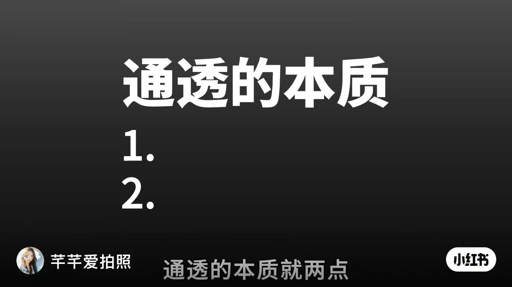
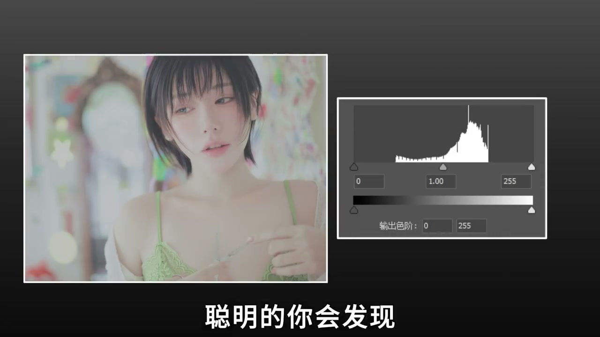
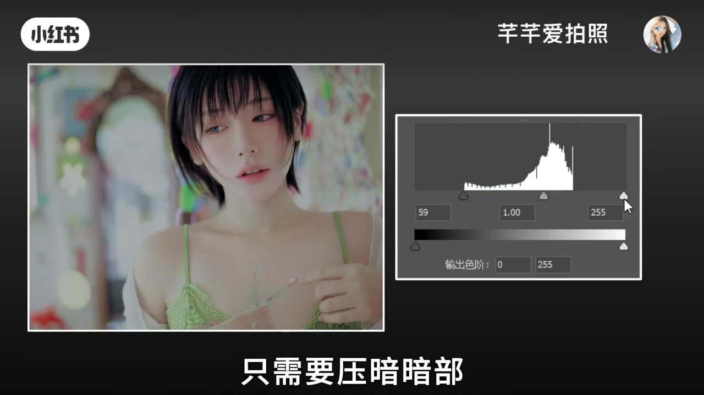
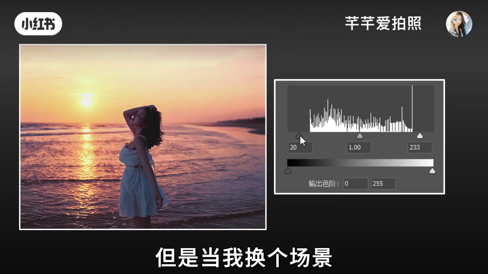
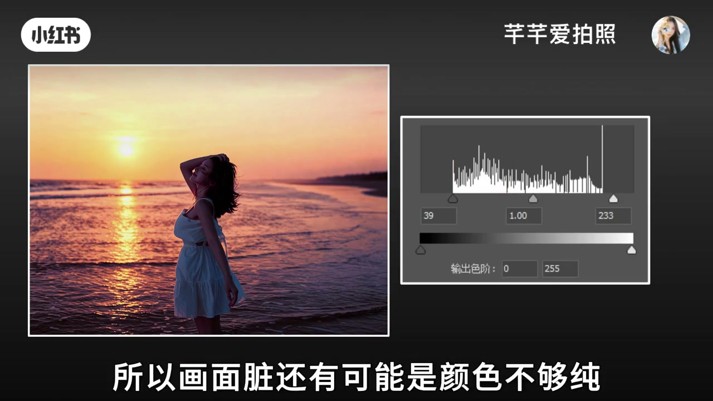
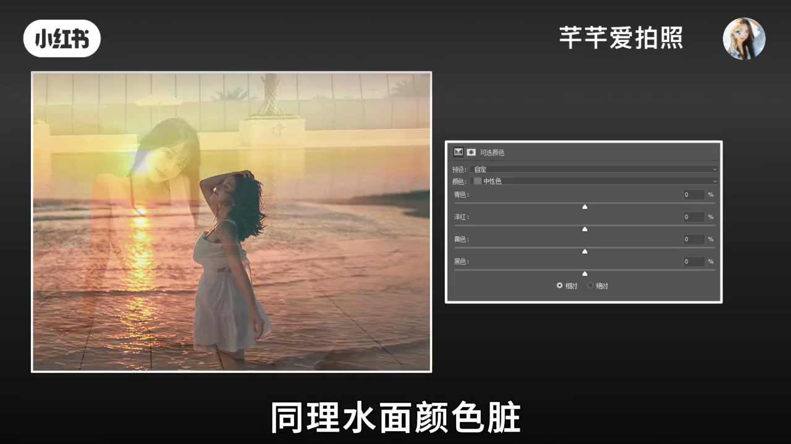

内容要点
一支 36 秒的极简调色课：一句话点透「照片通透」的本质——去灰、颜色干净。先看直方图：缺少暗部和亮部、信息集中在灰部就会不通透，压暗暗部、增亮亮部即可解决；再讲第二种情况：信息集中在暗部画面显脏，是颜色不够纯，需要在可选颜色中调中性色，水面脏就加青和蓝。
知识结构
通透的本质就两点：一去灰，二颜色干净。
直方图缺少暗部和亮部、信息集中在灰部，看起来就不通透。压暗暗部、增亮亮部，画面就通透了。
换个场景用同样办法还显脏，是信息集中在暗部、颜色不够纯。在可选颜色中不调红色而调中性色，灰就变干净；水面脏就选中性色加青色和邻近色蓝色。
照片通透只两点：去灰（压暗增亮拉开直方图两端）和颜色干净（在可选颜色中修中性色）。遇到画面显脏，先查直方图信息集中在哪，再对症调整。
00:00-00:05通透的本质就两点
「怎么让照片变通透？」视频直接给出答案：「通透的本质就两点：一，去灰；二，颜色干净。」36 秒的篇幅，围绕这两个词展开，没有多余的铺垫。

00:05-00:14去灰：拉开直方图两端
「聪明的你会发现，照片的直方图缺少暗部和亮部，信息主要集中在灰部，所以看起来不通透。」直方图的两端（纯黑、纯白）没有信息，中间堆满灰——画面自然发闷。
「只需要压暗暗部、增亮亮部，画面就通透了。」把灰部的信息向两端推开，对比度随之建立，通透感立刻出现。


00:14-00:36颜色干净：修中性色
「但是当我换个场景，用同样的办法，发现照片看起来还是显脏。」同样的压暗增亮，这次失灵了。「这个时候看直方图可以发现，信息主要集中在暗部，所以画面脏。」
「还有可能是颜色不够纯。」主讲人给出第二种解法：「在可选颜色中，不是调红色，而是中性色——也就是灰色加夕阳的红，和邻近色黄色，颜色中的灰就变干净了。」
「同理，水面颜色脏，选择中性色加青色和邻近色蓝色，颜色就变纯了，画面也就干净了。」一个场景对应一组中性色修正，通透感的第二块拼图就此补全。



完整转录（29段）
以下文本由 Whisper medium 模型自动转录，可能存在少量识别误差，已尽可能修正。
怎么让照片变通透（保留）
通透（保留）的本质就两点
一 去灰（保留）
二 颜色干净
聪明的你会发现
照片的直方图（保留）缺少暗部和亮部
信息主要集中在灰部
所以看起来不通透（保留）
只需要压暗暗部
增亮亮部
画面就通透（保留）了
但是当我换个场景
用同样的办法
发现照片看起来还是显脏
这个时候看直方图（保留）可以发现
信息主要集中在暗部
所以画面脏
还有可能是颜色不够纯
在可选颜色（保留）中
不是调红色
而是中性色（保留）
也就是灰色加夕阳的红
和邻近色黄色
颜色中的灰就变干净了
同理 水面颜色脏
选择中性色（保留）加青色
和邻近色蓝色
颜色就变纯了
画面也就干净了